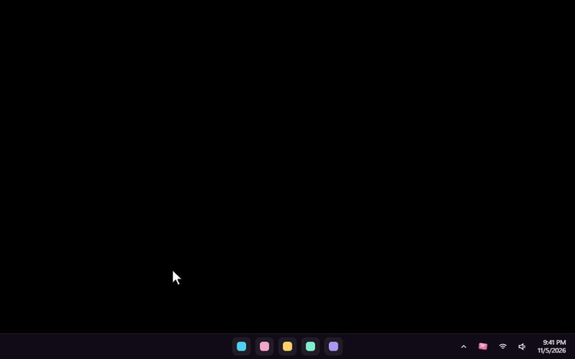
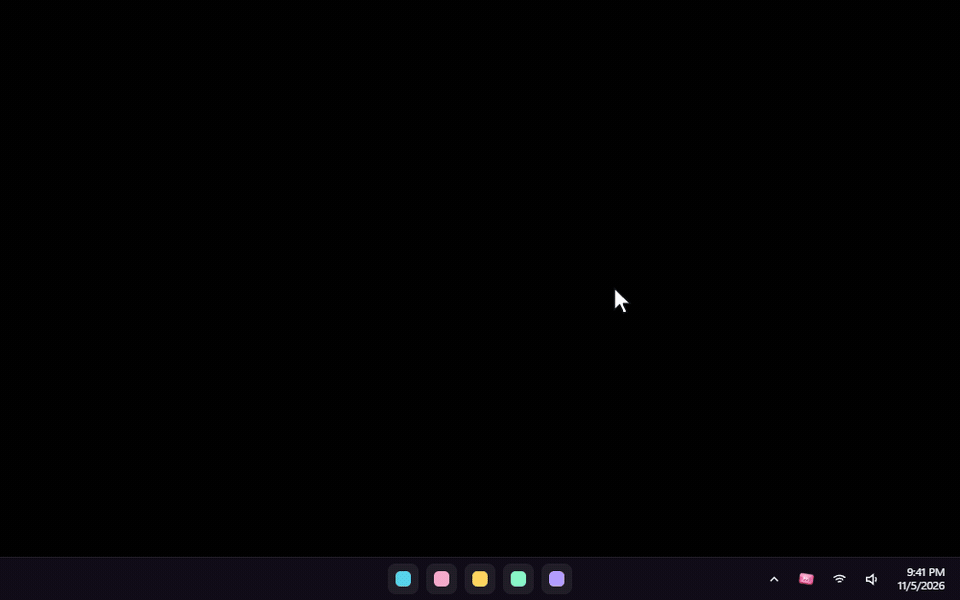
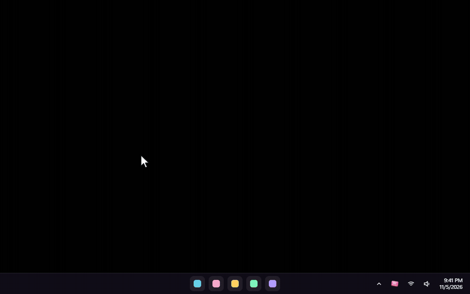

Skip Dat
Every music app's queue, one Alt + scroll away.
Hold Alt and scroll anywhere in Windows. A glass wheel of your queue pops out of the cursor. Let go to play the song you landed on. That's it. That's the app.

- Spotify
- YouTube Music
- YouTube
- SoundCloud
- Apple Music
- and other players

More than skipping now
Volume, jumping, liking and handing a song over to Spotify, all from the wheel. Plus a new style, a floating Settings window and new skins.
Volume and jumping, right on the wheel NEW
- Scroll over play/pause to turn the playing app up or down, 5% a notch. Desktop apps change only their own slider in Windows' volume mixer; YouTube and YouTube Music change only that tab.
- Scroll over the song playing to jump forward or back 10 seconds a notch.

Like, copy, play next NEW
- Like adds the song to Spotify's Liked Songs, or presses Like on YouTube, YouTube Music and SoundCloud. It never unlikes: a liked song stays liked.
- Copy link copies the song's Spotify link, or the page of the song playing in your browser.
- Play next puts a Spotify song straight after the one playing.
Continue on Spotify NEW
Heard something on YouTube Music, YouTube or SoundCloud? Continue on Spotify finds the same song on Spotify and starts it at about the same moment. The original pauses only once Spotify is really playing; if Spotify can't find or start it, nothing is paused.
Freaky Random NEW
The song in front is big and sharp; the rest float round it in a ring, the next one always closest, the further ones smaller and blurrier. Each notch glides every card one place along the ring. Point at a card to lift it, click it to play it. The ring takes a new shape every time it opens.

Settings floats NEW
No window frame, no background: only glass panels floating over your desktop. Drag it by the top card and click straight through the gaps. Look and Skin each open in their own glass panel: Change, or Ctrl + L and Ctrl + K.

Liquid Glass in your own colour NEW
A colour slider under Liquid Glass tints the glass any colour. It stays glass, with its blur, light and depth, and the words stay easy to read. Original puts the clear glass back.
Spotify users coming from 1.4: press Reconnect once under Spotify in Settings, so Like and Continue on Spotify can use your Liked Songs. Everything else is in CHANGELOG.md.
Four steps, then it's muscle memory
Install it, hold the shortcut, scroll, let go.
Install it

- Download SkipDat-setup.exe and run it. It installs for your Windows account only, so Windows won't ask for an administrator.
- If Windows says "Windows protected your PC", click More info, then Run anyway. The installer isn't code-signed yet.
- Skip Dat starts in the tray, next to the clock. The first time, Settings opens by itself.
Hold Alt, scroll, let go

| Do this | What happens |
|---|---|
| Hold Alt and keep holding it | Nothing yet. Alt still works as usual everywhere. |
| Scroll the mouse wheel | The wheel opens at your cursor. Each notch moves one song: down for what's next, up for what already played. |
| Let go of Alt | The song in front plays and the wheel slips back into your cursor. If you stayed on the song that's playing, nothing changes. |
While you hold: click, control, switch apps

- Click any song to play it straight away.
- Previous, play/pause and next beside the wheel do what they say; Like, Copy link, Play next and Continue on Spotify sit under them.
- Back to … takes you to the song you were on before your last skip or jump.
- Click an app's name to see that app's queue instead.
- Close without changing anything: Esc, or a click anywhere outside the wheel.
Keyboard and mouse shortcuts while holding
| Vertical wheel | Horizontal wheel | |
|---|---|---|
| Next / previous song | ↓ ↑ or the mouse wheel | → ← or the mouse wheel |
| Switch app | → ←, Tab, the mouse's side buttons, or tilting the wheel | ↓ ↑, Tab, the side buttons, or tilting the wheel |
| Play or pause | Space or a middle click | Space or a middle click |
| Play the song in front | Enter | Enter |
| Volume | the mouse wheel over play/pause | |
| Jump 10 seconds | the mouse wheel over the song in front | |
Spotify jumps, and Back to …

Pick a Spotify song four places down and Skip Dat jumps straight to it: you don't hear the songs in between, not even muted. It starts inside the playlist or album you're playing, and that list carries on. This needs the optional Spotify connection (see Good to know).

Back to … is undo for music: the song you were playing before your last skip or jump. Click it to go straight back, and again to return.
Use your own shortcut

Double-click the Skip Dat icon in the tray for Settings, then pick one under Shortcut. It works right away: Alt (the default), Ctrl, Shift, the Windows key, Ctrl + Alt, Ctrl + Shift, Alt + Shift, or the right, Back or Forward mouse button. A normal click or drag with that button still works; it only opens the wheel when you scroll while holding it.
What was I playing?

Right-click Skip Dat in the tray (or open Settings) and choose What was I playing? It lists what you listened to, newest first, with the app, the time and the cover. Click one to play it again. It stays on your PC, and Clear history empties it.
YouTube Music, YouTube and SoundCloud: add the browser companion

Browser music shows up by itself, but only the song that's on. For the whole queue (playlists, mixes and radio), playing any song in it, and volume, jumping and Like on that tab, add the small companion once. It works in Chrome, Edge, Brave and Opera:
- Open
chrome://extensionsin a new tab (in Edge,edge://extensions). - Turn on Developer mode.
- Click Load unpacked and choose the browser-companion folder in
%LOCALAPPDATA%\Programs\Skip Dat. The Show folder button in Settings opens it. - Reload any music tab that was already open.
Settings shows Connected once a music tab has talked to Skip Dat. After updating Skip Dat, press the companion's reload button once.
Make it look like yours
In Settings, Change next to Look (Ctrl + L) or Skin (Ctrl + K). Every change applies at once.

| Style | What it looks like |
|---|---|
| Wheel | Cards on a turning drum, the default. Vertical beside your cursor, or horizontal in a row above it. |
| Stack | A flat list of cards. |
| Cover flow | A row, turned to face you. |
| Orbit | A tilted ring of songs round your cursor, the far side blurred. |
| Compact | Just the titles, small. |
| Freaky Random NEW | The song in front is big; the rest float round it in a ring, the next one closest. |

Make your own: a skin is a folder with a skin.json file, plus any pictures and fonts it uses. Pictures can swing, breathe, flicker or play when the song changes. Open skins folder in the Skin panel takes you there, a starter skin is waiting, and the carousel updates as you save. Everything you can change is in SKINS.md.
What it shows for each app
Nothing is made up: when an app doesn't share what's next, the wheel shows what it played and what's on, and a note says so.
| App | Song that's on | Upcoming songs | Pick a song from the list |
|---|---|---|---|
| YouTube Music (with the companion) | ✓ | The whole Up next list: albums, playlists, mixes and radio, autoplay included | Plays it directly |
| YouTube playlist or mix (with the companion) | ✓ | The playlist or mix, growing as YouTube adds to it | Plays it directly |
| YouTube single video (with the companion) | ✓ | The one song autoplay will play next | Skips to it, muted on the way |
| SoundCloud (with the companion) | ✓ | The Next up list | Plays it directly (with shuffle on, skips to it muted, so the order stays) |
| Spotify app | ✓ | With the optional Spotify connection | Jumps straight to it when connected, inside your playlist or album; skips to it muted otherwise |
| Apple Music and other music apps | ✓ | Not shared by the app; you see the songs it played | Skips back through them, muted on the way |
| Music in a browser without the companion | ✓ | — | Skips, muted on the way |
The small print, but useful
- The Spotify connection (Settings → Spotify's upcoming songs) gives upcoming songs, straight jumps, Like, Play next and Continue on Spotify. Connect a free Spotify developer app (Client ID); Spotify requires its owner to have Premium.
- Performance mode (Settings → Options), for gaming and slower PCs: no blur, glass, shadows, animations, skin pictures or album art.
- Nothing leaves your PC. No account, no tracking. The companion only talks to Skip Dat on your own computer (
127.0.0.1), and your history stays in Skip Dat's folder. - Settings has no title bar: drag it by the top card. Alt + F4 closes it too, and the tray icon always opens it again.
- Updating: run a newer installer. It keeps your settings, skins and history. Reload the browser companion afterwards.
- If something goes wrong,
skipdat.login%APPDATA%\app.skipdat.desktopsays what happened. Attach it to an issue. - Removing: Windows Settings → Apps → Skip Dat → Uninstall, and remove the browser companion too.
- Limits: no wheel over a window running as administrator, or over full-screen exclusive games. Firefox isn't supported by the companion yet; its music still shows up, without the queue.
Rust underneath, glass on top
Skip Dat is a Tauri 2 app: Rust for the Windows side, and HTML, CSS and WebGL for the wheel and Settings.
- Install Rust from rustup.rs (the default MSVC toolchain) and the Visual Studio Build Tools with "Desktop development with C++".
- In
src-tauri, runcargo build --release. The app issrc-tauri\target\release\skip-dat.exe. - In
installer/anim, runcargo build --releasefor the installer's animation. - For the installer, install NSIS 3 and run
installer/build.shfrom Git Bash or WSL.
How the parts fit
src-tauri/src/hooks.rs global input: the shortcut, one step per wheel notch, clicks on the wheel's buttons
src-tauri/src/overlay.rs the transparent, click-through, always-on-top window; photographs the desktop for the glass
src-tauri/src/media.rs Windows media sessions; jumping within a song
src-tauri/src/browser.rs local server (127.0.0.1:47231) for the browser companion, extension-only
src-tauri/src/view.rs builds each app's real song list; pushes updates only when they change
src-tauri/src/actions.rs plays, skips and jumps, one at a time in order; Back to; replays from the history
src-tauri/src/extras.rs volume, jumping within a song, Like, Copy link, Play next, Continue on Spotify
src-tauri/src/plan.rs how to reach a song on each player: jump, muted skip, or leave it
src-tauri/src/audio.rs one app's slider in Windows' volume mixer: muting while skipping, volume
src-tauri/src/skins.rs built-in and user skins, the skins folder watcher
src-tauri/src/float.rs the floating Settings window: clicks between its panels pass through
src-tauri/src/spotify.rs optional Spotify sign-in (PKCE, no secret stored) and its Web API calls
browser-companion/ the Chrome / Edge extension that reads and drives the player
ui/overlay.js WebGL renderer and motion: styles, depth, skins, performance mode
ui/settings.html Settings: playing now, shortcut, the Look and Skin panels, companion, options
ui/skins/ the built-in skins; SKINS.md explains the format
docs/recorder/ records the GIFs on this page from the real carousel codeThe GIFs show Skip Dat's real carousel, recorded with real albums that their artists released under Creative Commons, shown with their real covers. Go listen to them, they're free.
- Nine Inch Nails: The Slip and Ghosts I–IV, licensed CC BY-NC-SA 3.0 US.
- Released by Bad Panda Records under CC BY-NC-SA 3.0:
- Memotone, Bad Panda EP
- Ben Mason, Easy / Never
- Kodak To Graph, Visiol EP
- Dumbo Gets Mad, Eclectic Prawn and You Make You Feel
- The Parish of Little Clifton, Septemberish
- Handbook, Been A While Since You Spoke
- Iròi, Where You Were Now
- The Underscore Orkestra, Balancing Act
- Ghostly Dust Machine, Ode To A Baby Snowstorm
- Berlinist, My Darling Grace
- The covers are shown as released, cropped square. Because they're NonCommercial-ShareAlike, the GIFs on this page are shared under CC BY-NC-SA 3.0 too.
- The desktop in the demos is plain black; the meme captions and stickers were made for them. All skin art is original.
- Skip Dat isn't affiliated with Spotify, YouTube, SoundCloud, Apple, Anthropic, Bad Panda Records or any artist named here. Claude-ish is an unofficial fan skin.